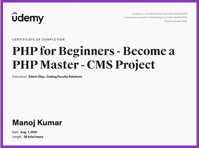
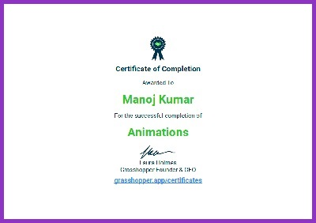
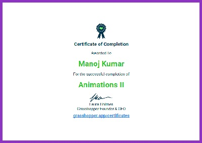
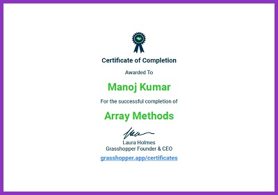
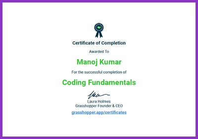

I am a Freelance Web Developer from London, passionate about web technologies.
Currently, I am actively upskilling on Udemy and seeking opportunities to enhance my
existing skill set in the field of Web Development. My goal is to work in Web Development
in some Capacity, ideally for a Creative Agency.
Education
Bachelor of Science, Computer Science - University of Westminster
BSc Foundation, Computer Studies - University of Westminster
GNVQ, Advanced Science (Chemistry, Physics, Biology) - Ealing, Hammersmith and West London College
GNVQ, Intermediate Science (Chemistry, Physics, Biology) - Cranford Community College
GCSES - Cranford Community College
Work Experience
Freelance Web Developer, Spiral Digital.
-
Cold Calling up businesses
Discussing their existing online business setup
Asking questions on areas they need assistance with
Fixing Meetings and demoing software, websites (front-end and back-end)
Requirements Gathering
Penning Project Proposals
Invoicing Clients
Discussing post-launch website requirements with clients
Assisting with digital marketing and social media requirements
Front-End Development using HTML, CSS and JS
Back-End Development using PHP and Python
Wordpress Development (custom plugin creation, bespoke theme creation, static to wp compliant theme conversion etc)
Sales Manager - KOL Limited.
-
-
Cold Calling up businesses
Understanding existing online business setup
Understanding shortcomings with existing online business setup
Unearthing online business requirements
Proposing suitable solutions to enable businesses to grow online
Scheduling meetings with business clients
Daily upkeep of CRM tool (callback dates, meetings etc)
Drafting out emails to prospective clients
Selling suitable eCommerce, Web Design and Digital Marketing solutions to clients
Attending Exhibitions and Tradeshows across the Capital on a regular basis
2nd Line Technical Support Agent - Webfusion.
-
Taking inbound customer calls
Resolving Domain Name disputes
Assisting with Domain name transfers both internal and external
Helping customers with Web Hosting issues
Domain name management (changing IPS tags, setting up domain forwarding, pointing to different servers etc
Remedying Email configuration problems for desktop and mobile
Accessing the 3rd-party platform with provided username and password.
Searching for available flights based on client requirements (destination, dates, number of passengers, etc.).
Comparing prices and flight options from multiple airlines.
Selecting the most suitable flights based on client preferences and budget.
Checking availability and securing seat reservations.
Booking the chosen flights on behalf of the clients.
Managing the booking process, including entering passenger details and ensuring accuracy.
Handling special requests such as seat preferences, meal preferences, or special assistance.
Verifying and confirming the booking details with clients.
Processing payments and managing financial transactions.
Issuing electronic tickets or reservation confirmations to clients.
Providing clients with relevant travel documents and itineraries.
Assisting clients with any changes or modifications to their bookings (date changes, name corrections, etc.).
Handling cancellations and refund requests as per the applicable policies.
Providing support and assistance to clients regarding flight-related inquiries or issues.
Maintaining records and documentation of client bookings and transactions.
Collaborating with the travel brokerage company to ensure smooth operations and adherence to company policies.
Sales Assistant - Currys Digital
-
Shop Floor Merchandising of both Brown Goods & White goods
Conducting SLR's (Stock Level Reports)
Bringing out heavy White Goods from internal warehouse
Setting up and Configuring Entertainment, Audio & Video items on shop floor for demoing purposes
Printing out updated pricing slips and promotional material on the digital printer
Assisting shopfloor customers with making purchases
Processing Transactions using in-store EPOS terminal
Selling Cover-Plan Policy to customers on orders larger than £200
Online Order Management of goods
Processing refunds via the EPOS Terminal
Dealing with returned unopened and/or faulty items
Booking in returned faulty items for repairs
Online Digital Training on SLR/DSLR and Camcorders
Tracking ordered goods for customers
Checking Stock Levels for goods at other depots and stores via system
Fabrications & Testing, Technical Support - Viglen Computers
-
Assembling PC Workstations from Assembly line
Diagnostics & Testing on Faulty Hardware
Performing PC Upgrades
Helping in the Post Room for Promotional material send outs
Logging repairs for PC Workstations
Training on Technical Support
Filling out Repair and Diagnostic Forms
Sealing Faulty Motherboards and Components ordering replacements
Taking inbound calls from existing customers
Troubleshooting hardware configurations over phone
Assisting customers over phone with upgrades
Skills
Technical
HTML5 - Hand coding web layouts with valid W3C and accessible markup
CSS3 - Creating responsive and visually appealing stylesheets
JavaScript - Developing interactive and dynamic functionality for web applications
jQuery - Utilizing the jQuery library to enhance front-end interactivity
RWD (Responsive Web Design) - Designing and developing websites that adapt to various screen sizes and devices
Python - Writing scripts and developing applications using Python programming language
PHP & MySQL - Building dynamic web applications with server-side scripting and database integration
Database Modelling - Designing and structuring databases for efficient data management
Database Normalisation - Applying normalization techniques to optimize database structure
SQL Queries - Writing SQL queries to retrieve and manipulate data from relational databases
Power BI - Creating interactive dashboards and visualizations for data analysis and reporting
WordPress - Building and customizing websites using the WordPress content management system
On-Page Optimization (SEO) - Implementing SEO best practices to improve website visibility and ranking
General & Soft Skills
Throughout my work, academic, personal, and social life, I have demonstrated the following attributes and traits:
Communication: The ability to effectively convey information, listen actively, and articulate ideas clearly.
Teamwork: The capability to collaborate and work harmoniously with others, contribute to group goals, and communicate and resolve conflicts within a team.
Problem-solving: The aptitude to analyze problems, identify solutions, think critically, and make decisions.
Leadership: The ability to guide and motivate others, delegate tasks, and provide direction.
Adaptability: The willingness to embrace change, be flexible, and adjust to new situations and challenges.
Time management: The skill to prioritize tasks, meet deadlines, and efficiently utilize time.
Creativity: The capacity to think innovatively, generate new ideas, and approach tasks from a fresh perspective.
Emotional intelligence: The awareness and management of one's emotions, as well as empathy and understanding of others' emotions.
Problem-solving: The ability to identify and resolve problems effectively, using critical thinking and analytical skills.
Attention to detail: Being thorough and meticulous in tasks, ensuring accuracy and precision.
Certifications & Courses Completed
Below you can see some of the various online courses, bootcamps and training courses I've undertaken to date along with certifications attained.
Course Title: Udemy Course - The Complete 2021 PHP Full Stack Web Developer Bootcamp
Date of Course Completion:

Udemy Course - PHP for Beginners - Become a PHP Master - CMS Project
Date of Course Completion:

Grasshopper Coding App - Animations 1
Date of Course Completion:

Grasshopper Coding App - Animations 2
Date of Course Completion:

Grasshopper Coding App - Array Methods
Date of Course Completion:

Grasshopper Coding App - Coding Fundamentals 1
Date of Course Completion:
Talend - Certificate of Completion - Talend Enterprise Data Integration Comprehensive